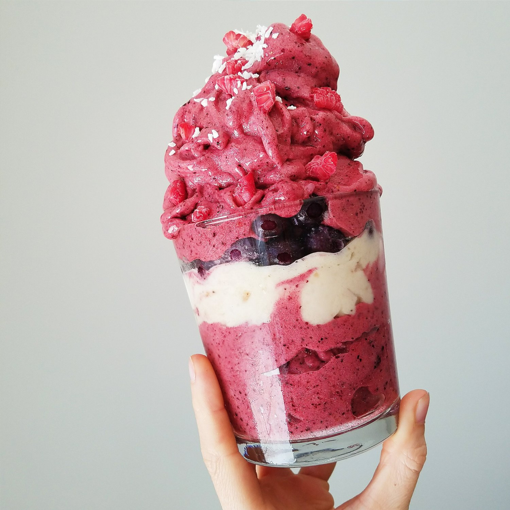
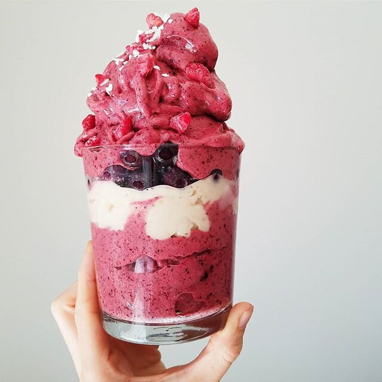

Berry Bomb Smoothie (vegan, gluten free)


It’s definitely smoothie season! Bright sun, outdoor fun, and refreshing smoothies like this berry bomb smoothie. It doesn't get any more simple than this recipe. This smoothie is packed with antioxidant superfoods and it is aimed towards hydration & recovery after a workout.
I use alpha aminos during and after every bike ride I do! Alpha aminos are BCAAs (branched chain amino acids) plus a hydration formula added to help you feel good during endurance sports. I always liked them when lifting weights, but I only used them maybe once a week. Now that I've been riding often, I use them always! It really helps me sustain my power without just dropping off and feeling broken the next day. Plus iz so yummieeeee.
I am giving this away!! The giveaway ends FRIDAY (5/27) so enter before it's over!! The details are on my Instagram. For my friends that use whey protein, this is a collab giveaway with my good friend meg - she's giving away cellucor whey protein so enter on both our posts for a chance to win two products. :)AS ALWAYS, discount code “PBEECHIE” gives a 25% discount off every cellucor.com order no matter the product you buy! If you buy a full size product, forward me the purchase confirmation and I'll send you some nifty samples in the mail too.
Not only are the alpha aminos helpful towards recovery, but blueberries are especially aiding because of all of the antioxidants they contain. They're a sure feel good food.
Whether you're feeling kinda sore from a workout, or just want a yummy and refreshing drink, try this berry bomb smoothie out! I'm sure you'll love it.
Berry BOMB Smoothie
-
1 frozen banana, chopped
-
1 cup frozen blueberries
-
1 cup frozen strawberries, sliced
-
1 scoop mixed berry Cellucor alpha aminos
Just blend all of the ingredients! If you want it more liquid-y to drink, add some water, but if you want it thick like ice cream, don't add any! You could also use the fruit punch flavor alpha aminos, but I prefer the berry! Add any fruit on top that you like.